Gallery 1853
A student photo contest that became a real art exhibition — and ended with permanent work displayed outside the President's Office.
A student sharing their love for campus reaches homes and hearts that haven't fallen for UF yet. They're the most authentic connector to the next generation of Gators. So we gave them a reason to share — and then we gave the best of what they shared a permanent home outside the president's office.
The contest
Students were invited to photograph campus life and submit their images under the hashtag #Gallery1853. Five categories gave the community a creative framework — and a reason to look at their campus with a photographer's eye.
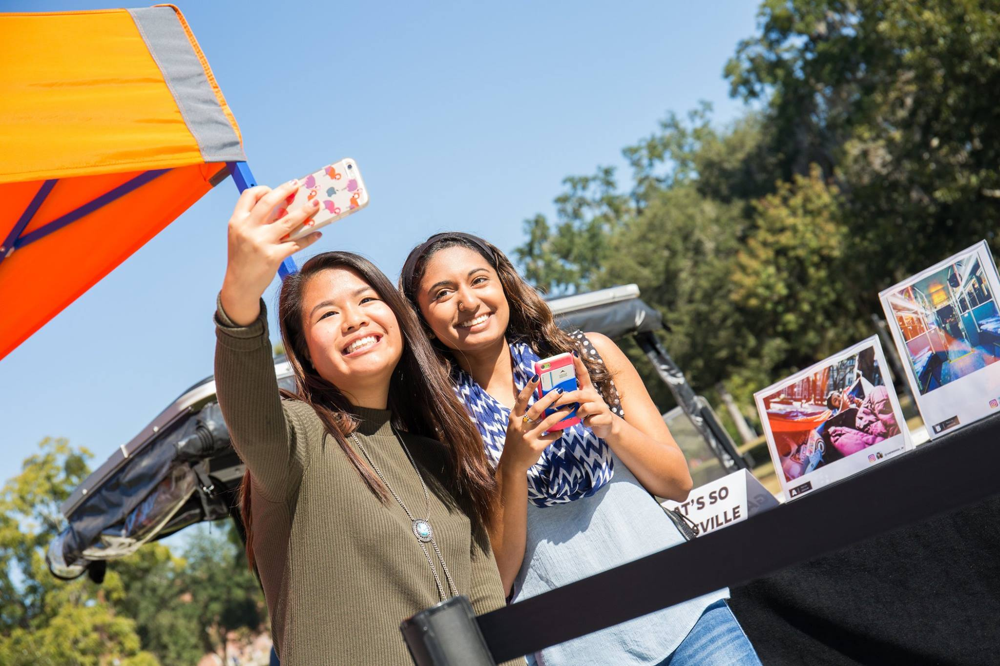
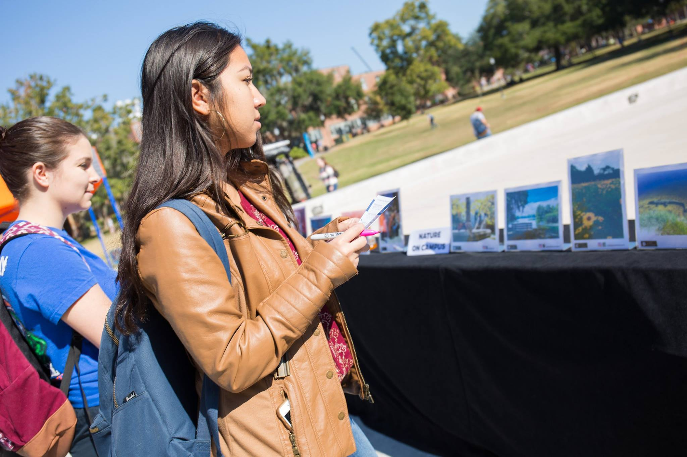
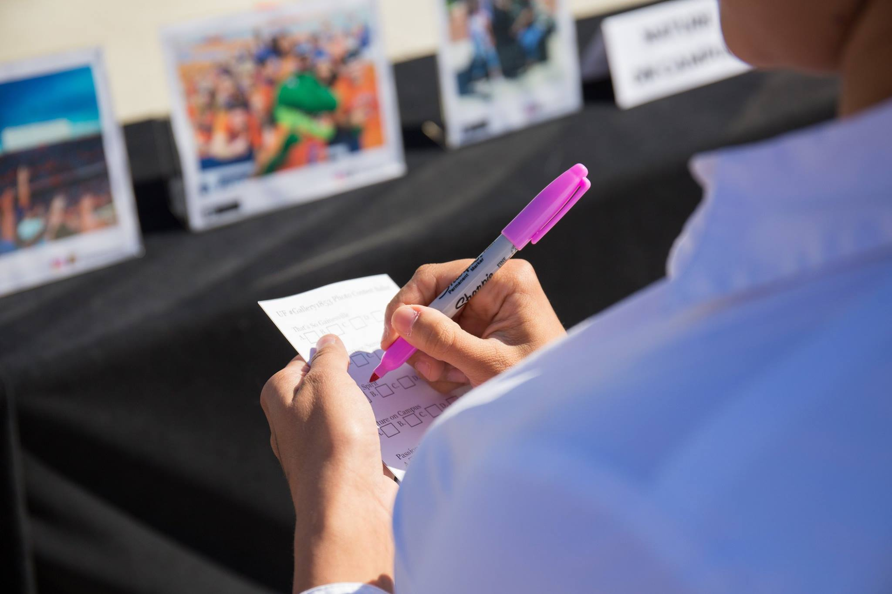
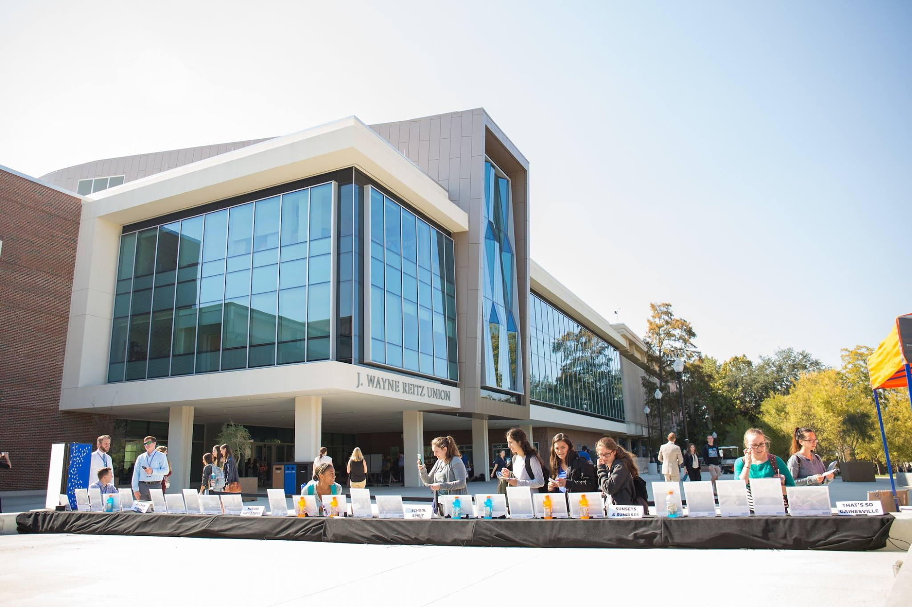
The gallery show
The UF Social Street Team curated five finalists per category (25 total) and displayed them in a pop-up art gallery outside the Reitz Union. The campus community stopped to study the work, cast ballots, take selfies with their favorites — and in some cases, discover their own photo on display for the first time.
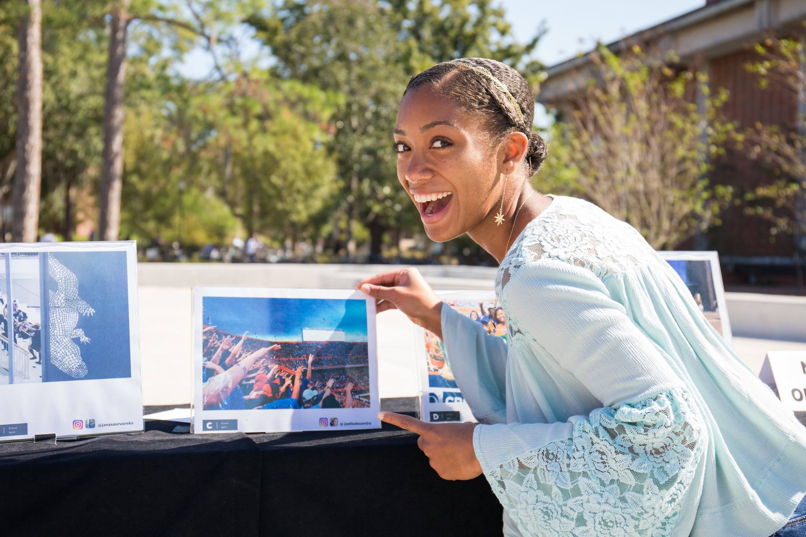
The coffee table book
All 25 finalist photos were compiled into a coffee table book gifted to a select group of major donors — a tangible artifact of the community's creativity presented to those supporting UF's rise in the rankings.
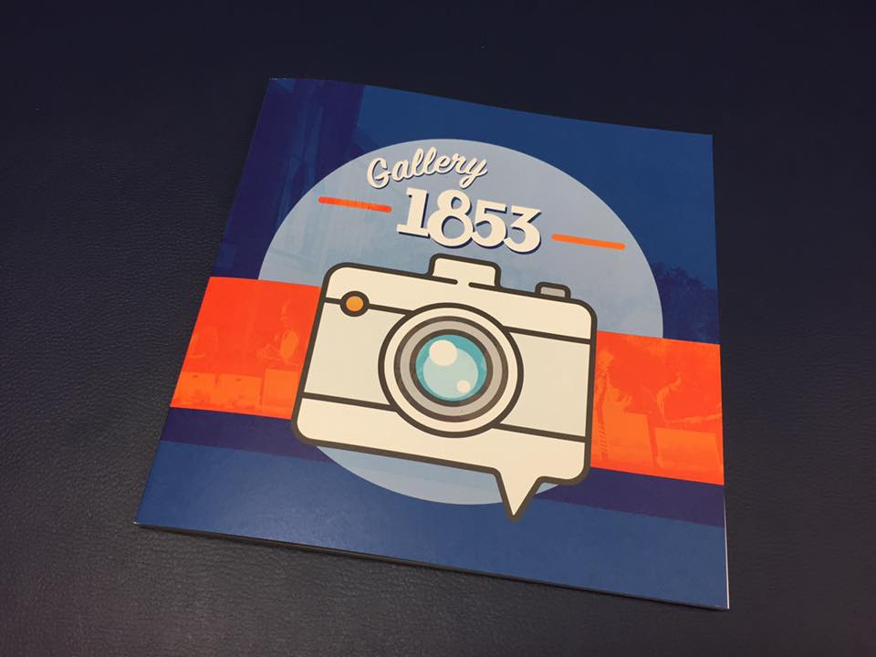
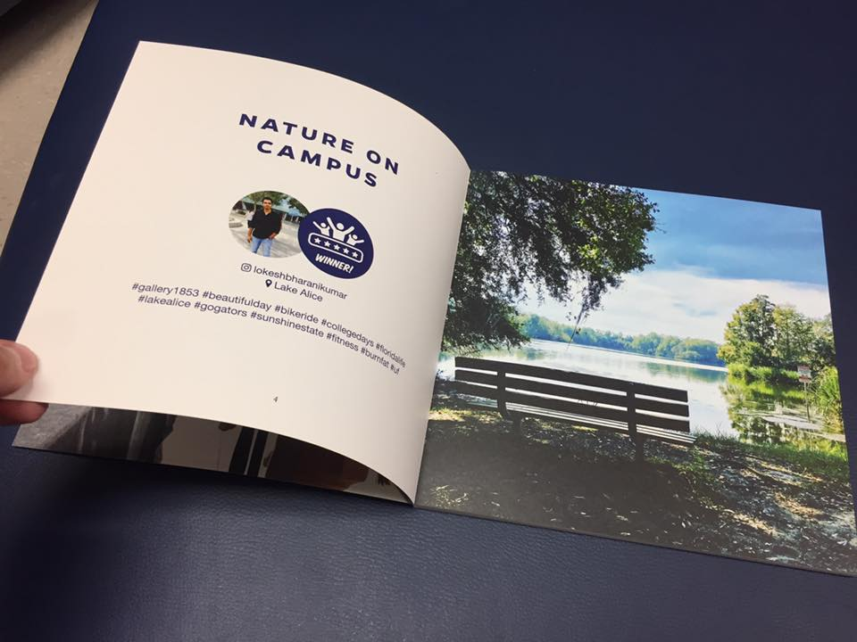
The permanent collection
The five winners were printed and mounted permanently outside the President's Office. Student photographs — taken on their phones, submitted with a hashtag — now hang in one of the most distinguished spaces on campus.
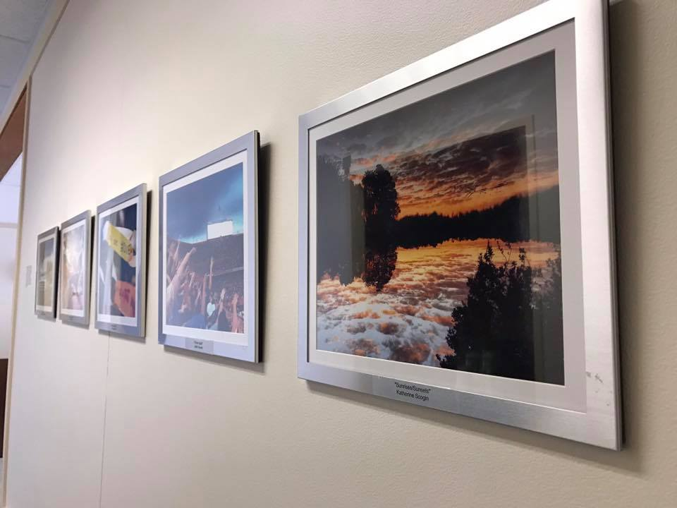
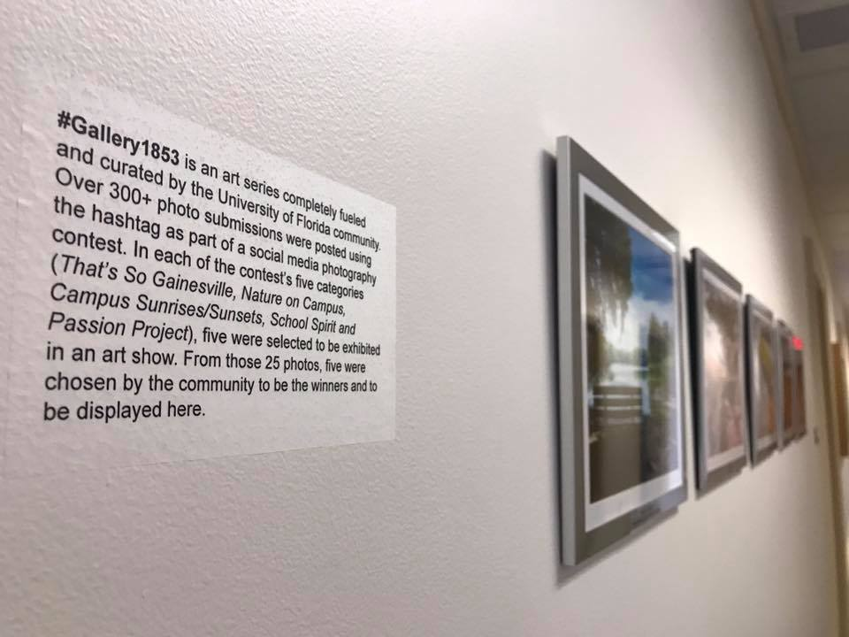
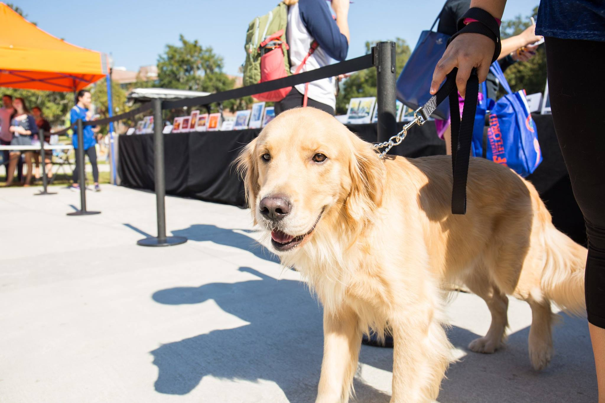
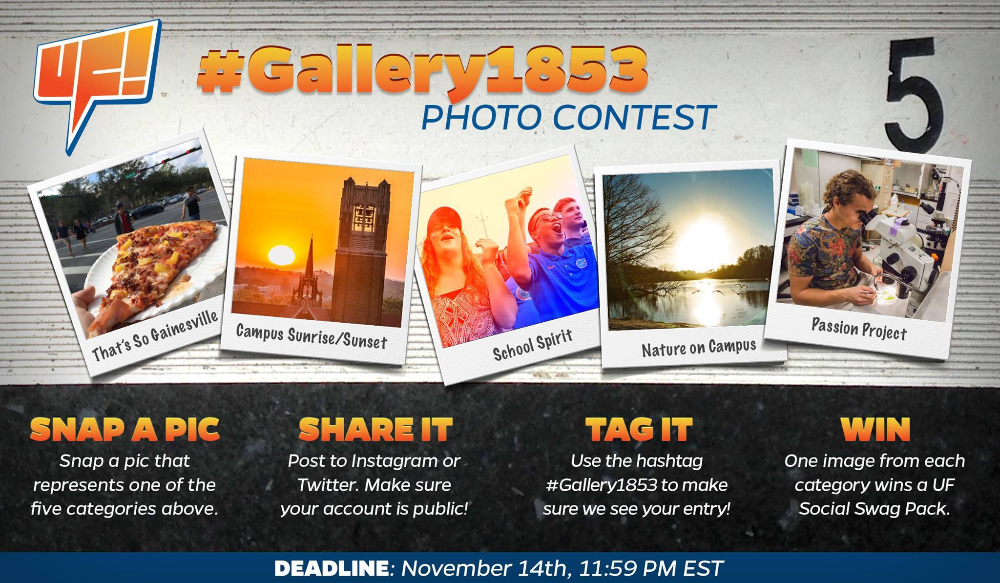
Gallery 1853 showed what social media can be when it's treated as a creative platform rather than a broadcast channel. The community didn't just engage, they told the UF story from their perspective.